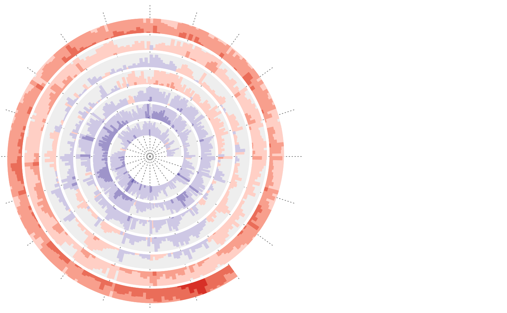

spiral_horizon.RdDraw horizon chart along the spiral
spiral_horizon(x, y, n_slices = 4, slice_size, pos_fill = "#D73027", neg_fill = "#313695", use_bars = FALSE, bar_width = min(diff(x)), negative_from_top = FALSE, track_index = current_track_index())
| x | X-locations of the data points. |
|---|---|
| y | Y-locations of the data points. |
| n_slices | Number of slices. |
| slice_size | Size of the slices. The final number of sizes is |
| pos_fill | Colors for positive values. |
| neg_fill | Colors for negative values. |
| use_bars | Whether to use bars? |
| bar_width | Width of bars. |
| negative_from_top | Should negative distribution be drawn from the top? |
| track_index | Index of the track. |
Since the track height is very small in the spiral, horizon chart visualization is a efficient way to visualize distribution-like graphics.
A list of the following objects:
a color mapping function for colors.
a vector of intervals that split the data.
df = readRDS(system.file("extdata", "global_temperature.rds", package = "spiralize")) df = df[df$Source == "GCAG", ] spiral_initialize_by_time(xlim = range(df$Date), unit_on_axis = "months", period = "year", period_per_loop = 20, polar_lines_by = 360/20, vp_param = list(x = unit(0, "npc"), just = "left"))spiral_horizon(df$Date, df$Mean, use_bar = TRUE)